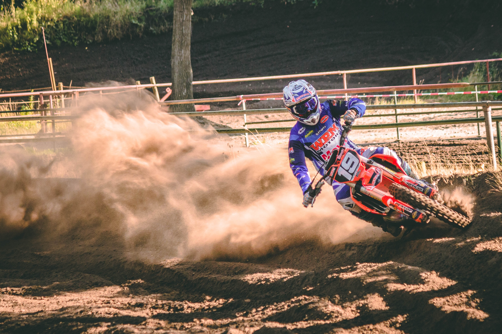

A master blender is an individual who develops specific blended spirits using a combination of spirits with different characteristics. For example, in theScotch whisky industry, master blenders choose which single malts and grain whiskies to combine to make particular brands of blended whiskey. A master blender is not the same thing as a master distiller, although one person may do both jobs at small craft distilleries. As the name suggests, the blender creates blends using spirits from different casks and is responsible for making sure the product remains consistent across different batches, while the distiller is either directly responsible for the mashing and distilling of spirits or simply holds the title as the administrative and marketing figurehead of the company.
The term master blender is often associated with the whiskey industry, but it is also used for professionals who blend other spirits, such as rum, brandy, and vodka.
